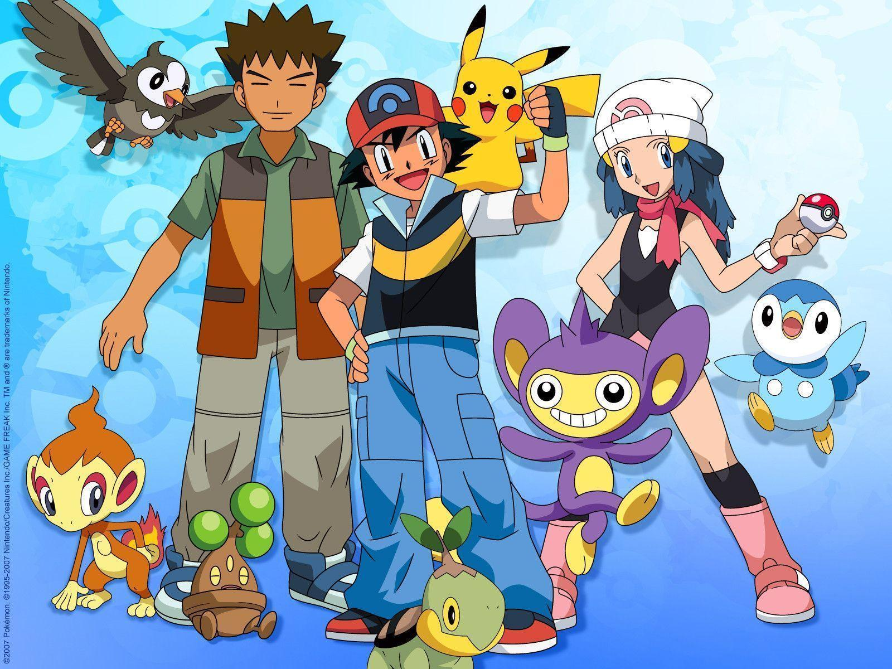

«Покемо́н» (яп. ポケットモンスター покэтто монсута, англ. Pokémon, от англ. Pocket Monster — карманный монстр — аниме, снятое по мотивам одноимённой серии видеоигр и являющееся частью медиафраншизы «Покемон». Премьера первой серии «Покемон! Я выбираю тебя!» прошла 1 апреля 1997 года в Японии на телеканале TV Tokyo. С тех пор вышло шесть аниме-сериалов и более 1000 серий, выпуск новых серий продолжается по настоящее время. Кроме того, каждый год выходят полнометражные фильмы, дополняющие и расширяющие сюжет аниме.